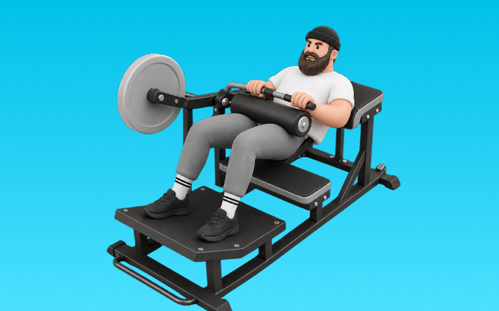

グルートドライブマシン

グルートドライブマシンとは、マシンを使って「動かす」動作でお尻（臀筋）、太もも裏（ハムストリング）を鍛える種目です。軌道が安定して狙った部位に効かせやすいのが特徴で、骨盤を持ち上げて臀部を締め、ゆっくり戻す動作を繰り返します。下半身の筋力・筋量アップが期待できます。
- 対象部位
- 脚
- 器具
- マシン
- 記録形式
- 重量・回数
- 別名
- ヒップスラストマシン
YouTube動画
-
筋力アップ・脂肪燃焼向上マシンの使い方グルート【お尻】27
-
【ケーブルマシン】女性が知りたいお尻・二の腕・背中 使い方4選！
-
下半身これだけで◎難しいマシンの使い方や、あまり知られていない綺麗に筋肉をつけるコツを解説します！
-
【エニタイムフィットネス】ジムのマシンで出来るヒップアップ種目4選【筋トレ】
-
"前ももに効く"は卒業。お尻の下を鍛える基本4種目！ジムでもお家でも🍑
YouTubeショート
-
グルートトレーナーの正しい使い方解説！🍑美尻を目指すあなたへ💪✨
-
HIPTHRUST machine / glute drive explained #hipthrust #glutedrive #fitnesstips #gymequipment #gymtip
-
【ジムあるある】使い方がわからないマシンTOP3#ジムあるある#あるある動画#あるあるネタ#フィットネス女子
-
スクワットVSヒップスラストお尻の筋肥大に効果的なのはどちら？ #フィットネス #筋トレ
-
【あるある】女子がジムでジロジロ見られる理由【全トレーニー心の声】
-
筋トレ初心者はジムで〇〇と思われています。#shorts
-
【両店共通】グルート 使い方動画
-
【グルート・ブリッジの正しいやり方】グイっとカラダを持ち上げて尻を鍛える｜Training Movie 100｜Tarzan
-
【グルートアイソレータ(リリ店内マシンO)】お尻周り(ヒップ)を鍛えるトレーニングマシンの使い方の簡単な説明動画です。負荷(重さ)設定はピンを差し替えるだけ、初心者から上級者まで対応しています。
-
いつもやってるケーブルキックバック解説!!
-
ジムあるある、最初みんなつまずくよねw #shorts
-
正しいレッグプレス4つのポイント #フィットネス #筋トレ
-
ジムにいて感じる事ほかにあるかな。#筋トレ#筋肉ネタ#トレーニング#エニタイムフィットネス
-
グル－トマシンでヒップアップ！
-
ジムあるある-初心者がやり方が分からない時- #shorts
-
意味のない筋トレTOP３ #shorts #筋トレ #タケタコタン渾身の演技披露
-
【万代店女性ルーム】ヒップスラストマシン 使い方動画
-
How to PROPERLY Glute Pull Through ✅ (TRY THIS NOW) 🍑
-
みんなはトレ中なに履いてる？#shorts #アルプロン #筋トレあるある #ジムあるある
-
#shorts #attivo #diet #training #ダイエット #ケーブル
-
ﾋｯﾌﾟ&ｸﾞﾙｰﾄ屈曲
動作方法
- 背中を中立に保ち、股関節から動き始める
- もも裏の張りを感じる位置まで下ろす
- 足裏で床を押して立ち上がる
動作ポイント
- 背中を丸めない
- 膝を伸ばしきらない
- バーや重りを体から離しすぎない
ワンポイントアドバイス
- ウォームアップで股関節と足首を動かす
- 高重量の日はセーフティ設定を確認する
目的別回数設定
目的や体力に応じた一般的な目安です。無理のない範囲で調整してください。
- 筋力アップ
- 1〜5回
- 筋肥大
- 6〜12回
- 持久力アップ
- 13〜20回
YouTube動画について
動画はYouTubeの公開情報をもとに表示しています。内容は投稿者によるもので、Biggrによる監修ではありません。
アプリを入手
筋トレやトレーニングの記録はBiggrにお任せください。今すぐ無料で使い始められます。